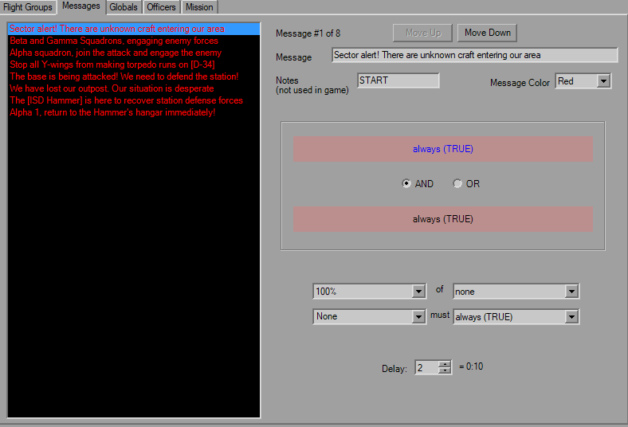

In-Flight Messages

Like the FlightGroup tab, Messages features a large multiselect-capabel list box that displays all of the in-flight messages in their respective colors. Don't let the size of the list fool you though, as there's a maximum of 16 messages enforced to prevent file corruption.
There's not a whole lot to this, you have a message string limited to 63 characters, a short note string similar to FlightGroup.Pilot (LA missions sometimes use this note for who is speaking) and the color that the message will appear as.
You have two triggers at your disposal, and although the copy and paste buttons aren't there, you can still use the buttons on the toolbar or the mouse. The Delay works as expected and is the number of seconds after the trigger is fired that the message is sent.